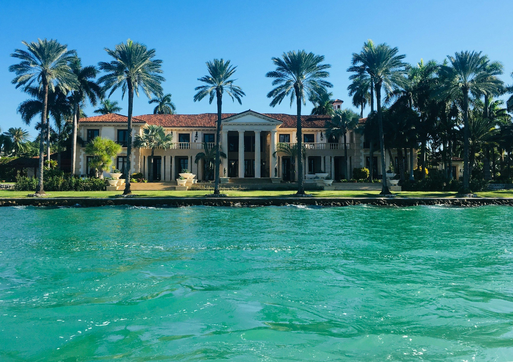

01
Longboat Key, Florida
Condos and homes for sale on Longboat Key, the barrier island between the Gulf and Sarasota Bay, with Ryan and Katie Sherman.
Longboat Key at a glance
Longboat Key is a barrier island with the Gulf of Mexico on the west and Sarasota Bay on the east, and Gulf of Mexico Drive runs its whole length. The north part of the town is in Manatee County and the south part in Sarasota County.
Civil War veteran Thomas Mann settled the north end with his sons in 1891 under a homestead grant. In the 1920s John Ringling bought land on the south end and planted Australian pines along Ringling Boulevard, today's Gulf of Mexico Drive; the Ritz-Carlton he began on New Pass in 1926 was never finished and came down in 1962, after Arvida bought the land. The town incorporated on November 14, 1955, building peaked in the 1960s and 1970s, and Longboat Key Towers was its first condominium.
25min
Sarasota Bradenton International Airport
17min
Downtown Sarasota
10min
St. Armands Circle
93min
Tampa International Airport
Approximate drive times from Town Hall without traffic (OSRM routing, read 2026-10-23)
Bayfront Park
Courts, a fenced dog park and a kayak launch on Sarasota Bay
Joan M. Durante Park
Restored wetland and coastal hammock, and the one Town park that allows leashed pets
Quick Point Nature Preserve
Mangroves and a tidal lagoon, reached on a walkway under the New Pass bridge
Town Center Green
The Town's outdoor event lawn and pavilion on Bay Isles Road
Saved searches
Each card opens a live search of the MLS listings, updated as they change.
01

02

03

04
$1,095,000
1065 Gulf of Mexico Drive, Unit 504 Longboat Key, FL 34228
2 beds · 2 baths · 1,520 sq ft

The Town lists public beach accesses along Gulf of Mexico Drive from the 2800 block to the 6800 block, plus accesses at 100 Broadway Street and 100 North Shore Road, most with parking at or near them, and it keeps the beach up with a management plan and periodic nourishment. At the north end, Whitney Beach lies across from Whitney Plaza, with public parking on Broadway Street and no facilities. Greer Island, which locals call Beer Can Island, is reached by kayak, paddleboard or boat and looks out on Longboat Pass.
Bayfront Park, at 4052 Gulf of Mexico Drive on Sarasota Bay, has basketball, pickleball, shuffleboard and tennis courts, a fenced dog park, a recreation center and a kayak launch with a small bayside beach and a floating dock, and the Town manages public storage for kayaks, canoes and paddleboards there. Farther north, at 5550 Gulf of Mexico Drive, Joan M. Durante Park turned a vacant site back into wetland and coastal hammock. Its first phase opened in 1995, and it is the one Town park where leashed animals are allowed.
On the southeast end of the key, Quick Point Nature Preserve protects wetlands, mangroves, a man-made tidal lagoon and seagrass beds, and no pets are allowed. You walk in on a wooden walkway under the New Pass bridge from Overlook Park, a spot for fishing, picnics and watching boats run New Pass. The Florida Department of Transportation owns Overlook Park, the Town keeps it up, and it is open from 5 a.m. to 11 p.m.
Town Center Green, at 600 Bay Isles Road, opened on February 11, 2023 as the Town’s outdoor event lawn, with an esplanade wired for food trucks and the Karon Family Pavilion. Sarasota County and the Town are designing a Longboat Key library and a community hall for the Green. The Town also runs a Tennis Center with clay courts, and Visit Sarasota names waterfront golf and tennis among the key’s highlights.
The county line crosses the key: from the 4000 block of Gulf of Mexico Drive north you are in Manatee County, and south of it in Sarasota County. That decides your school district, the Manatee County School District on the north end or Sarasota County Schools on the south, and which county holds your parcel records. Town Hall is at 501 Bay Isles Road, and Breeze OnDemand, a curb-to-curb service of Sarasota County Breeze Transit, serves the key. For the condo buildings, see Ryan and Katie’s Sarasota Condos page.
Day to day
School information is factual and by district. Always confirm a specific address in the district's school finder.
In their words
… Think peaceful beaches, waterfront condos and homes, boating, golf, and a more private feel than some of our busier islands. It’s refined without being flashy …
Katie and Ryan Sherman
Questions
Both. Longboat Key is its own town, incorporated in 1955, and the county line crosses it: from the 4000 block of Gulf of Mexico Drive north is Manatee County, and the rest of the key is Sarasota County.
It depends on the county. The Manatee County School District serves the north end and Sarasota County Schools the south end, and no public school sits inside the town limits. Confirm the school for any address with its district.
Joan M. Durante Park is the one Town park or beach where leashed animals are allowed, and Bayfront Park has a fenced dog park. Pets are not allowed at Quick Point Nature Preserve.
Yes. Breeze OnDemand, a curb-to-curb service of Sarasota County Breeze Transit, serves Longboat Key and Lido Key.
Nearby


Resources
Contact
Call Katie at 321-429-9031 or send a note about the building or the end of the key you have in mind.